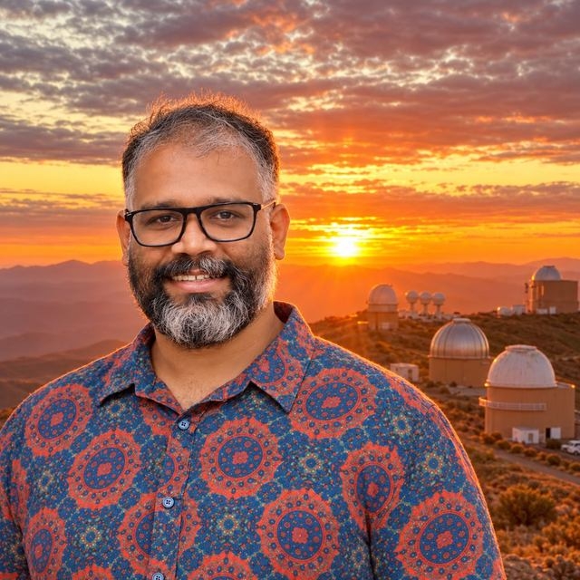

Adaptive optics · Systems engineering
Kalyan Kumar Radhakrishnan Santhakumari
Technologist · INAF Padova | SOXS AIV Lead & Deputy System Engineer
Adaptive-optics and astronomical-instrument engineer; leads SOXS AIV and serves as Deputy System Engineer, with contributions to MAVIS, MORFEO, LINC-NIRVANA and INGOT.

About
Kalyan is a technologist at the INAF Astronomical Observatory of Padova, specialising in adaptive optics, systems engineering and the assembly, integration and verification of ground-based astronomical instruments. He completed his PhD in Astronomy and Astrophysics at Heidelberg University in 2017, working at the Max Planck Institute for Astronomy on the LINC-NIRVANA multi-conjugate adaptive-optics system for the Large Binocular Telescope. He leads AIV activities and serves as Deputy System Engineer for SOXS, including its integration, installation and commissioning at ESO's La Silla Observatory. His work also spans MAVIS adaptive-optics calibration, MORFEO instrument integration planning, NIRVANA-VIS system engineering, and laboratory development of the Ingot wavefront sensor. His experience bridges optical alignment, system verification, observatory commissioning and science-enabling instrumentation.
Projects
SOXS
Spectroscopic follow-up of supernovae and other rapidly changing objects.
MAVIS
Adaptive-optics-assisted visible-light imaging and spatially resolved spectroscopy.
MORFEO
An adaptive-optics relay enabling diffraction-limited imaging with MICADO.
NIRVANA-VIS
A visible-light upgrade of LINC-NIRVANA, combining adaptive optics and speckle holography.
INGOT
Wavefront sensing tailored to elongated artificial guide stars.
LINC-NIRVANA
A near-infrared interferometric camera combining the light from the LBT’s two mirrors.
SHARK-NIR
Direct imaging and spectroscopy close to bright stars in the near-infrared.